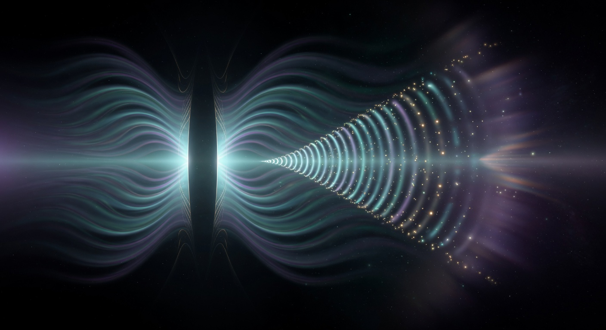

When Looking Changes What Is Real
The double-slit experiment is the most famous demonstration that the quantum world refuses to behave like everyday objects. Fire electrons at a barrier with two narrow slits. Behind the barrier, a screen lights up with bright and dark bands — an interference pattern. Waves from both slits are overlapping and canceling.
Send the electrons one by one, so that only a single electron is in the apparatus at any moment. The interference pattern still builds up over time. Each electron somehow “knows” about both slits.
Now place a detector that can tell which slit the electron passed through. The interference disappears. The pattern becomes two simple clumps — as if the electrons were tiny bullets choosing one slit or the other. The mere possibility of knowing the path changes how the electron behaves.
In certain “delayed choice” versions of the experiment, the decision whether to measure which-path information can be made after the electron has already passed the slits — and the result still changes. It is as if the electron retroactively decided whether it was a wave or a particle based on a measurement made in its future.
In the Mandukya and other Upanishads, consciousness is not a product of the brain or a late arrival in the universe. It is the ground in which all phenomena appear. The “seer” (drashta or sakshi) is that which is aware of thoughts, sensations, and the world — yet is never itself an object that can be seen.
The world of multiplicity (the “ten thousand things”) arises and is experienced only in the presence of this witnessing awareness. Without the light of consciousness, there is no “world” in the sense of something appearing.
This is not a claim about electrons or measurement devices. It is a claim about the nature of experience itself: manifestation and witnessing are not two separate events. One does not happen without the other.
Quantum mechanics does not prove the Upanishads, nor do the Upanishads explain the double-slit experiment. What they offer together is a richer question: What if “observation” in physics is pointing toward something more fundamental than we usually assume — not just a conscious human looking, but the very fact that something is registered, known, or interacted with at all?
Some physicists (Wigner, von Neumann in certain interpretations, and more recent thinkers) have taken the role of consciousness in quantum mechanics seriously. Others insist the “observer” can be any physical interaction. The debate remains open at the deepest level.
Regardless of where the physics ultimately lands, the experiments invite a shift in how we experience our own attention:
“The next time you notice yourself truly seeing — really present with what is in front of you — remember the electron that waited, in some sense, to be met before it decided what it would be.”
This deep exploration examines the full history of the double-slit and delayed-choice experiments (including recent photonic and atomic versions), various interpretations (Copenhagen, Many-Worlds, QBism, Penrose OR), detailed Mandukya and other Upanishadic passages on sakshi and drishti with multiple translations, cross-connections to entanglement and vacuum, and extended contemplative practices for cultivating the witness perspective in daily perception. Immersive synthesis of physics and non-dual insight.
Read the Full Deep Article~7,000 words • 55–75 min read